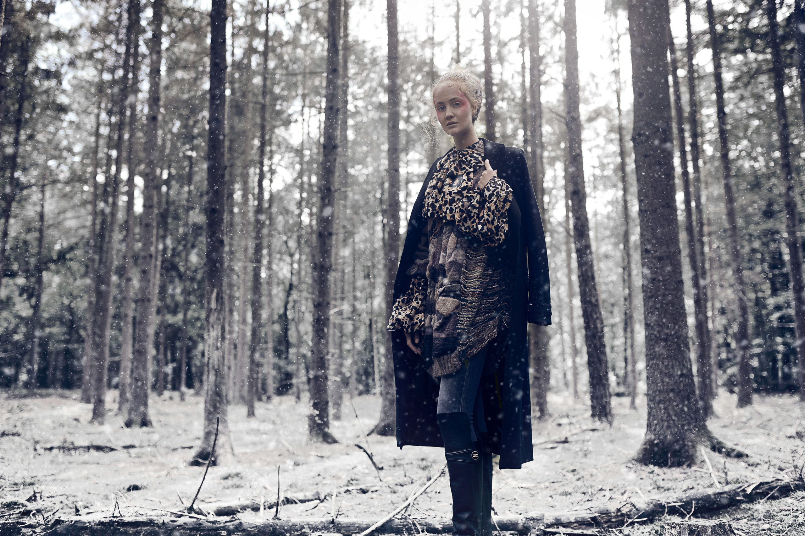
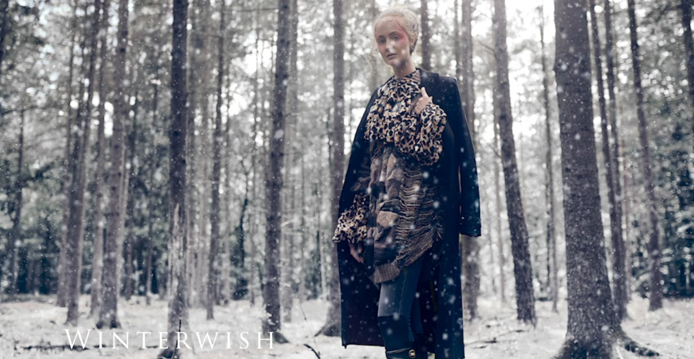
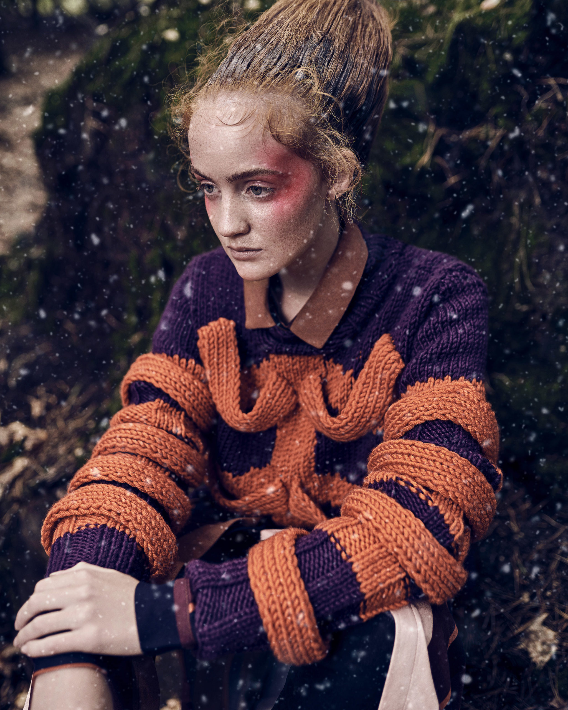
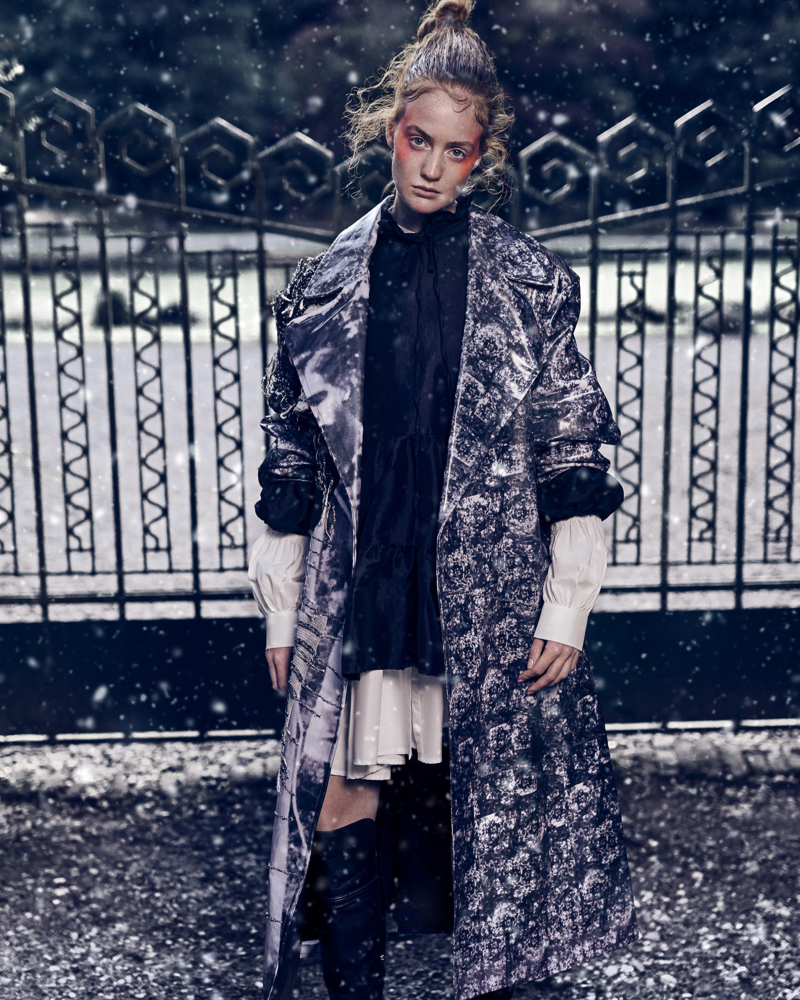
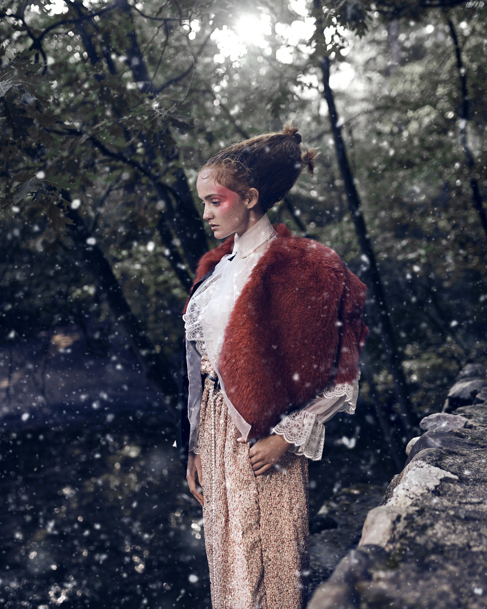
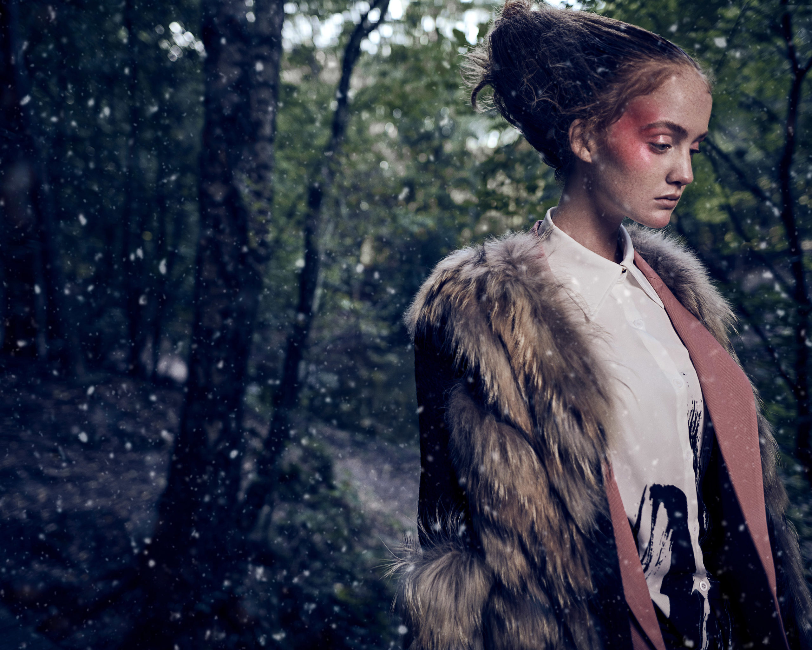

Douwe
Bob
Winter
Wish


WinterWish. If winter will not come to us. We paint it white.
Shot in summer made for winter
- Model Amber Tonnis
- Styling Annet Veerbeek
- Makeup/Hair Angelique Stapelbroek
- Photography Otto van den Toorn
- Magazine Talkies



